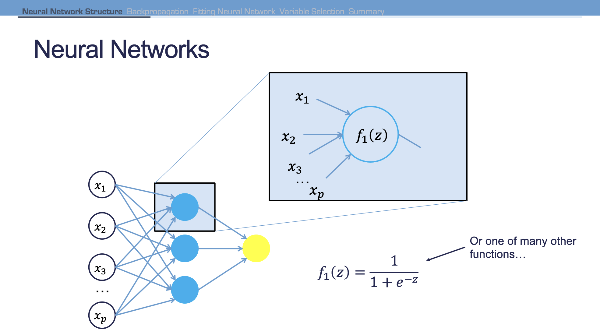

Neural networks are organized as a network of neurons through layers. Input variables are considered neurons on the bottom layer. The output variable is considered the neuron on the head layer. The layers in between are hidden layers which transform the input variables through non-linear activation functions to try and best model the output variable.
A neural network is a linear transformation of nonlinear transformations of our inputs and weights spread out across different layers.
Figure 1: Neural Net Structure

Figure 2: Activation Functions
2 Backpropagation
There are two main phases: a forward and backward phase.
In the forward phase:
Start with randomly initialized weights
Calculations are passed forward through the network
Output predicted value computed
In the backward phase:
Predicted value compared with actual value to compute error
Work backwards through the network to adjust weights to make the prediction better
We want to repeat this process until we have some notion of convergence.
3 Implementing Neural Nets in R
3.1 Standardization
Neural nets work best when input data are scaled. For bell-shaped data, statistical z-scores standardization can work. For severely assymmetric data, midrange standardization works better:
Warning in nominalTrainWorkflow(x = x, y = y, wts = weights, info = trainInfo,
: There were missing values in resampled performance measures.
Code
nn_ames_caret$bestTune
size decay
2 3 0.5
4 Variable Selection
Neural networks typically do not care about variable selection. All variables are used in a complicated and mixed way. If you want to do variable selectinon, you can examine weights for each variable, but this is not a clear selection technique.